Vector-Quantized Variational Autoencoders
Author: Sayak Paul
Date created: 2021/07/21
Last modified: 2026/03/06
Description: Training a VQ-VAE for image reconstruction and codebook sampling for generation.

In this example, we develop a Vector Quantized Variational Autoencoder (VQ-VAE). VQ-VAE was proposed in Neural Discrete Representation Learning by van der Oord et al. In standard VAEs, the latent space is continuous and is sampled from a Gaussian distribution. It is generally harder to learn such a continuous distribution via gradient descent. VQ-VAEs, on the other hand, operate on a discrete latent space, making the optimization problem simpler. It does so by maintaining a discrete codebook. The codebook is developed by discretizing the distance between continuous embeddings and the encoded outputs. These discrete code words are then fed to the decoder, which is trained to generate reconstructed samples.
For an overview of VQ-VAEs, please refer to the original paper and this video explanation. If you need a refresher on VAEs, you can refer to this book chapter. VQ-VAEs are one of the main recipes behind DALL-E and the idea of a codebook is used in VQ-GANs. This example uses implementation details from the official VQ-VAE tutorial from DeepMind.
Requirements
To run this example, you will need TensorFlow 2.5 or higher, as well as TensorFlow Probability, which can be installed using the command below.
Imports
import os
os.environ["KERAS_BACKEND"] = "tensorflow" # or "jax", "torch"
import numpy as np
import matplotlib.pyplot as plt
import keras
from keras import layers
from keras import ops
from keras import random
keras.utils.set_random_seed(42)
def show_figure():
if "inline" in plt.get_backend().lower():
plt.show()
else:
plt.close()
VectorQuantizer layer
First, we implement a custom layer for the vector quantizer, which is the layer in between
the encoder and decoder. Consider an output from the encoder, with shape (batch_size, height, width,
num_filters). The vector quantizer will first flatten this output, only keeping the
num_filters dimension intact. So, the shape would become (batch_size * height * width,
num_filters). The rationale behind this is to treat the total number of filters as the size for
the latent embeddings.
An embedding table is then initialized to learn a codebook. We measure the L2-normalized distance between the flattened encoder outputs and code words of this codebook. We take the code that yields the minimum distance, and we apply one-hot encoding to achieve quantization. This way, the code yielding the minimum distance to the corresponding encoder output is mapped as one and the remaining codes are mapped as zeros.
Since the quantization process is not differentiable, we apply a straight-through estimator in between the decoder and the encoder, so that the decoder gradients are directly propagated to the encoder. As the encoder and decoder share the same channel space, the decoder gradients are still meaningful to the encoder.
class VectorQuantizer(layers.Layer):
def __init__(self, num_embeddings, embedding_dim, beta=0.25, **kwargs):
super().__init__(**kwargs)
self.embedding_dim = embedding_dim
self.num_embeddings = num_embeddings
self.beta = beta # The `beta` parameter is best kept between [0.25, 2] as per the paper.
# Initialize the embeddings codebook
self.embeddings = self.add_weight(
shape=(self.embedding_dim, self.num_embeddings),
initializer="random_uniform",
trainable=True,
name="embeddings_vqvae",
)
def call(self, x):
input_shape = ops.shape(x)
flattened = ops.reshape(x, [-1, self.embedding_dim])
encoding_indices = self.get_code_indices(flattened)
# Reshape indices to match spatial dimensions (e.g., 7x7)
encoding_indices = ops.reshape(encoding_indices, input_shape[:-1])
encodings = ops.one_hot(encoding_indices, self.num_embeddings)
quantized = ops.matmul(encodings, ops.transpose(self.embeddings))
quantized = ops.reshape(quantized, input_shape)
commitment_loss = ops.mean((ops.stop_gradient(quantized) - x) ** 2)
codebook_loss = ops.mean((quantized - ops.stop_gradient(x)) ** 2)
self.add_loss(self.beta * commitment_loss + codebook_loss)
quantized = x + ops.stop_gradient(quantized - x)
# RETURN BOTH: The quantized tensor and the indices
return [quantized, encoding_indices]
def get_code_indices(self, flattened_inputs):
# Calculate L2-normalized distance
similarity = ops.matmul(flattened_inputs, self.embeddings)
distances = (
ops.sum(ops.square(flattened_inputs), axis=1, keepdims=True)
+ ops.sum(ops.square(self.embeddings), axis=0)
- 2 * similarity
)
return ops.argmin(distances, axis=1)
A note on straight-through estimation:
This line of code implements the straight-through estimator: quantized = x + ops.stop_gradient(quantized - x). In the forward pass, the terms cancel out (x+quantized−x), and the layer outputs the discrete quantized vectors. In the backward pass, since the gradient of ops.stop_gradient is zero, the gradient of the loss with respect to the output is effectively copied directly to the input x (the encoder's output). This allows the model to bypass the non-differentiable quantization step and train the encoder using the decoder's gradients. Thanks to this video for helping me understand this technique.
Encoder and decoder
Now for the encoder and the decoder for the VQ-VAE. We will keep them small so that their capacity is a good fit for the MNIST dataset. The implementation of the encoder and decoder come from this example.
Note that activations other than ReLU may not work for the encoder and decoder layers in the quantization architecture: Leaky ReLU activated layers, for example, have proven difficult to train, resulting in intermittent loss spikes that the model has trouble recovering from.
def get_encoder(latent_dim=16):
input_shape = (28, 28, 1)
encoder_inputs = keras.Input(shape=input_shape)
x = layers.Conv2D(32, 3, activation="relu", strides=2, padding="same")(
encoder_inputs
)
x = layers.Conv2D(64, 3, activation="relu", strides=2, padding="same")(x)
encoder_outputs = layers.Conv2D(latent_dim, 1, padding="same")(x)
return keras.Model(encoder_inputs, encoder_outputs, name="encoder")
def get_decoder(latent_dim=16):
latent_inputs = keras.Input(shape=(7, 7, latent_dim))
x = layers.Conv2DTranspose(64, 3, activation="relu", strides=2, padding="same")(
latent_inputs
)
x = layers.Conv2DTranspose(32, 3, activation="relu", strides=2, padding="same")(x)
decoder_outputs = layers.Conv2DTranspose(1, 3, padding="same")(x)
return keras.Model(latent_inputs, decoder_outputs, name="decoder")
Standalone VQ-VAE model
def get_vqvae(latent_dim=16, num_embeddings=128):
input_shape = (28, 28, 1)
vq_layer = VectorQuantizer(num_embeddings, latent_dim, name="vector_quantizer")
encoder = get_encoder(latent_dim)
decoder = get_decoder(latent_dim)
inputs = keras.Input(shape=input_shape)
encoder_outputs = encoder(inputs)
# quantized_latents and codebook_indices are now KerasTensors
quantized_latents, codebook_indices = vq_layer(encoder_outputs)
reconstructions = decoder(quantized_latents)
# Return a model with two outputs
return keras.Model(inputs, [reconstructions, codebook_indices], name="vq_vae")
get_vqvae().summary()
Model: "vq_vae"
┏━━━━━━━━━━━━━━━━━━━━━━━━━━━━━━━━━┳━━━━━━━━━━━━━━━━━━━━━━━━┳━━━━━━━━━━━━━━━┓ ┃ Layer (type) ┃ Output Shape ┃ Param # ┃ ┡━━━━━━━━━━━━━━━━━━━━━━━━━━━━━━━━━╇━━━━━━━━━━━━━━━━━━━━━━━━╇━━━━━━━━━━━━━━━┩ │ input_layer_2 (InputLayer) │ (None, 28, 28, 1) │ 0 │ ├─────────────────────────────────┼────────────────────────┼───────────────┤ │ encoder (Functional) │ (None, 7, 7, 16) │ 19,856 │ ├─────────────────────────────────┼────────────────────────┼───────────────┤ │ vector_quantizer │ [(None, 7, 7, 16), │ 2,048 │ │ (VectorQuantizer) │ (None, 7, 7)] │ │ ├─────────────────────────────────┼────────────────────────┼───────────────┤ │ decoder (Functional) │ (None, 28, 28, 1) │ 28,033 │ └─────────────────────────────────┴────────────────────────┴───────────────┘
Total params: 49,937 (195.07 KB)
Trainable params: 49,937 (195.07 KB)
Non-trainable params: 0 (0.00 B)
Note that the output channels of the encoder should match the latent_dim for the vector
quantizer.
Wrapping up the training loop inside VQVAETrainer
class VQVAETrainer(keras.Model):
def __init__(self, train_variance, latent_dim=32, num_embeddings=128, **kwargs):
super().__init__(**kwargs)
self.train_variance = train_variance
self.latent_dim = latent_dim
self.num_embeddings = num_embeddings
self.vqvae = get_vqvae(self.latent_dim, self.num_embeddings)
self.total_loss_tracker = keras.metrics.Mean(name="total_loss")
self.reconstruction_loss_tracker = keras.metrics.Mean(
name="reconstruction_loss"
)
self.vq_loss_tracker = keras.metrics.Mean(name="vq_loss")
@property
def metrics(self):
return [
self.total_loss_tracker,
self.reconstruction_loss_tracker,
self.vq_loss_tracker,
]
def call(self, x, training=False):
return self.vqvae(x, training=training)
def compute_loss(
self, x=None, y=None, y_pred=None, sample_weight=None, training=True
):
# y_pred is now [reconstructions, indices]
reconstructions = y_pred[0]
reconstruction_loss = ops.mean((x - reconstructions) ** 2) / (
self.train_variance + 1e-7
)
total_loss = reconstruction_loss + ops.sum(self.vqvae.losses)
# Update trackers
self.total_loss_tracker.update_state(total_loss)
self.reconstruction_loss_tracker.update_state(reconstruction_loss)
self.vq_loss_tracker.update_state(ops.sum(self.vqvae.losses))
return total_loss
Load and preprocess the MNIST dataset
(x_train, _), (x_test, _) = keras.datasets.mnist.load_data()
x_train = np.expand_dims(x_train, -1).astype("float32")
x_test = np.expand_dims(x_test, -1).astype("float32")
x_train_scaled = (x_train / 255.0) - 0.5
x_test_scaled = (x_test / 255.0) - 0.5
data_variance = np.var(x_train / 255.0)
Train the VQ-VAE model
vqvae_trainer = VQVAETrainer(data_variance, latent_dim=16, num_embeddings=128)
vqvae_trainer.compile(optimizer=keras.optimizers.Adam())
vqvae_trainer.fit(x_train_scaled, epochs=30, batch_size=128)
Epoch 1/30
469/469 ━━━━━━━━━━━━━━━━━━━━ 13s 26ms/step - reconstruction_loss: 0.3517 - total_loss: 4.4951 - vq_loss: 4.1434
Epoch 2/30
469/469 ━━━━━━━━━━━━━━━━━━━━ 12s 26ms/step - reconstruction_loss: 0.1582 - total_loss: 2.0422 - vq_loss: 1.8839
Epoch 3/30
469/469 ━━━━━━━━━━━━━━━━━━━━ 12s 26ms/step - reconstruction_loss: 0.1255 - total_loss: 0.9329 - vq_loss: 0.8073
Epoch 4/30
469/469 ━━━━━━━━━━━━━━━━━━━━ 12s 26ms/step - reconstruction_loss: 0.1071 - total_loss: 0.5917 - vq_loss: 0.4846
Epoch 5/30
469/469 ━━━━━━━━━━━━━━━━━━━━ 13s 27ms/step - reconstruction_loss: 0.0930 - total_loss: 0.4331 - vq_loss: 0.3401
Epoch 6/30
469/469 ━━━━━━━━━━━━━━━━━━━━ 13s 27ms/step - reconstruction_loss: 0.0823 - total_loss: 0.3691 - vq_loss: 0.2867
Epoch 7/30
469/469 ━━━━━━━━━━━━━━━━━━━━ 12s 26ms/step - reconstruction_loss: 0.0758 - total_loss: 0.3425 - vq_loss: 0.2667
Epoch 8/30
469/469 ━━━━━━━━━━━━━━━━━━━━ 12s 26ms/step - reconstruction_loss: 0.0705 - total_loss: 0.3162 - vq_loss: 0.2458
Epoch 9/30
469/469 ━━━━━━━━━━━━━━━━━━━━ 12s 26ms/step - reconstruction_loss: 0.0661 - total_loss: 0.2924 - vq_loss: 0.2263
Epoch 10/30
469/469 ━━━━━━━━━━━━━━━━━━━━ 12s 27ms/step - reconstruction_loss: 0.0628 - total_loss: 0.2770 - vq_loss: 0.2142
Epoch 11/30
469/469 ━━━━━━━━━━━━━━━━━━━━ 13s 27ms/step - reconstruction_loss: 0.0606 - total_loss: 0.2690 - vq_loss: 0.2085
Epoch 12/30
469/469 ━━━━━━━━━━━━━━━━━━━━ 13s 28ms/step - reconstruction_loss: 0.0587 - total_loss: 0.2636 - vq_loss: 0.2050
Epoch 13/30
469/469 ━━━━━━━━━━━━━━━━━━━━ 13s 28ms/step - reconstruction_loss: 0.0573 - total_loss: 0.2601 - vq_loss: 0.2029
Epoch 14/30
469/469 ━━━━━━━━━━━━━━━━━━━━ 13s 27ms/step - reconstruction_loss: 0.0559 - total_loss: 0.2566 - vq_loss: 0.2007
Epoch 15/30
469/469 ━━━━━━━━━━━━━━━━━━━━ 13s 28ms/step - reconstruction_loss: 0.0547 - total_loss: 0.2532 - vq_loss: 0.1984
Epoch 16/30
469/469 ━━━━━━━━━━━━━━━━━━━━ 13s 27ms/step - reconstruction_loss: 0.0535 - total_loss: 0.2490 - vq_loss: 0.1955
Epoch 17/30
469/469 ━━━━━━━━━━━━━━━━━━━━ 13s 28ms/step - reconstruction_loss: 0.0524 - total_loss: 0.2447 - vq_loss: 0.1923
Epoch 18/30
469/469 ━━━━━━━━━━━━━━━━━━━━ 13s 28ms/step - reconstruction_loss: 0.0515 - total_loss: 0.2411 - vq_loss: 0.1895
Epoch 19/30
469/469 ━━━━━━━━━━━━━━━━━━━━ 13s 27ms/step - reconstruction_loss: 0.0507 - total_loss: 0.2382 - vq_loss: 0.1875
Epoch 20/30
469/469 ━━━━━━━━━━━━━━━━━━━━ 13s 29ms/step - reconstruction_loss: 0.0498 - total_loss: 0.2347 - vq_loss: 0.1849
Epoch 21/30
469/469 ━━━━━━━━━━━━━━━━━━━━ 13s 28ms/step - reconstruction_loss: 0.0490 - total_loss: 0.2316 - vq_loss: 0.1825
Epoch 22/30
469/469 ━━━━━━━━━━━━━━━━━━━━ 13s 28ms/step - reconstruction_loss: 0.0483 - total_loss: 0.2292 - vq_loss: 0.1809
Epoch 23/30
469/469 ━━━━━━━━━━━━━━━━━━━━ 13s 28ms/step - reconstruction_loss: 0.0476 - total_loss: 0.2262 - vq_loss: 0.1786
Epoch 24/30
469/469 ━━━━━━━━━━━━━━━━━━━━ 13s 27ms/step - reconstruction_loss: 0.0469 - total_loss: 0.2230 - vq_loss: 0.1762
Epoch 25/30
469/469 ━━━━━━━━━━━━━━━━━━━━ 13s 28ms/step - reconstruction_loss: 0.0462 - total_loss: 0.2199 - vq_loss: 0.1737
Epoch 26/30
469/469 ━━━━━━━━━━━━━━━━━━━━ 13s 28ms/step - reconstruction_loss: 0.0455 - total_loss: 0.2155 - vq_loss: 0.1699
Epoch 27/30
469/469 ━━━━━━━━━━━━━━━━━━━━ 13s 28ms/step - reconstruction_loss: 0.0446 - total_loss: 0.2096 - vq_loss: 0.1649
Epoch 28/30
469/469 ━━━━━━━━━━━━━━━━━━━━ 13s 27ms/step - reconstruction_loss: 0.0441 - total_loss: 0.2067 - vq_loss: 0.1626
Epoch 29/30
469/469 ━━━━━━━━━━━━━━━━━━━━ 13s 27ms/step - reconstruction_loss: 0.0437 - total_loss: 0.2046 - vq_loss: 0.1610
Epoch 30/30
469/469 ━━━━━━━━━━━━━━━━━━━━ 13s 28ms/step - reconstruction_loss: 0.0431 - total_loss: 0.2015 - vq_loss: 0.1584
<keras.src.callbacks.history.History at 0x13d4e5a60>
Reconstruction results on the test set
def show_subplot(original, reconstructed):
plt.subplot(1, 2, 1)
plt.imshow(original.squeeze() + 0.5)
plt.title("Original")
plt.axis("off")
plt.subplot(1, 2, 2)
plt.imshow(reconstructed.squeeze() + 0.5)
plt.title("Reconstructed")
plt.axis("off")
show_figure()
trained_vqvae_model = vqvae_trainer.vqvae
idx = np.random.choice(len(x_test_scaled), 10)
test_images = x_test_scaled[idx]
reconstructions_output, _ = trained_vqvae_model.predict(test_images)
for test_image, reconstructed_image in zip(test_images, reconstructions_output):
show_subplot(test_image, reconstructed_image)
1/1 ━━━━━━━━━━━━━━━━━━━━ 0s 73ms/step
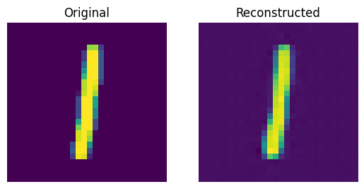
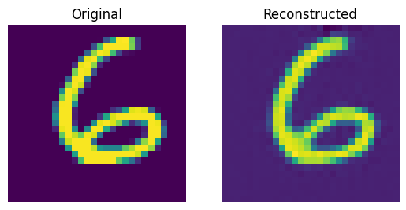
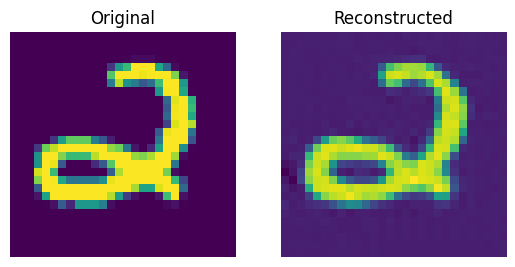
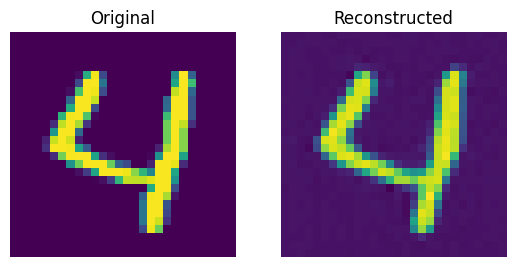
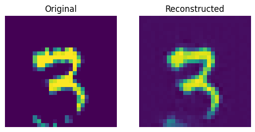
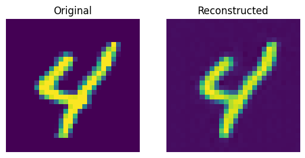
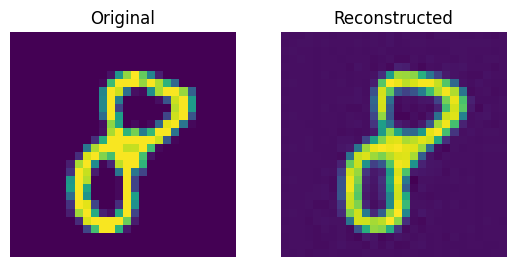
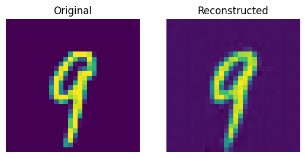
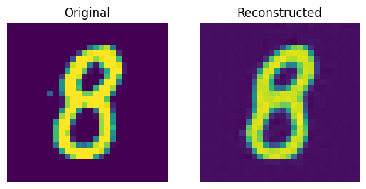
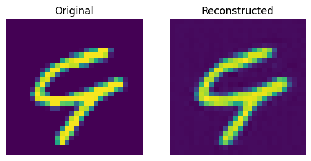
These results look decent. You are encouraged to play with different hyperparameters (especially the number of embeddings and the dimensions of the embeddings) and observe how they affect the results.
Visualizing the discrete codes
_, codebook_indices = vqvae_trainer.vqvae.predict(test_images)
codebook_indices_np = ops.convert_to_numpy(codebook_indices)
for i in range(len(test_images)):
plt.figure(figsize=(6, 3))
plt.subplot(1, 2, 1)
plt.imshow(test_images[i].squeeze() + 0.5)
plt.title("Original")
plt.axis("off")
plt.subplot(1, 2, 2)
plt.imshow(codebook_indices_np[i])
plt.title("Code")
plt.axis("off")
show_figure()
1/1 ━━━━━━━━━━━━━━━━━━━━ 0s 21ms/step
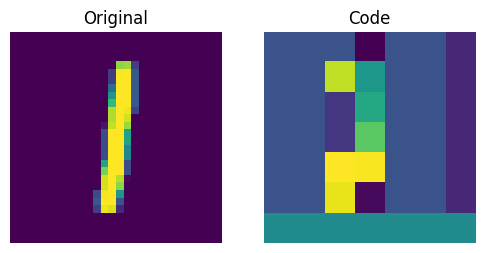
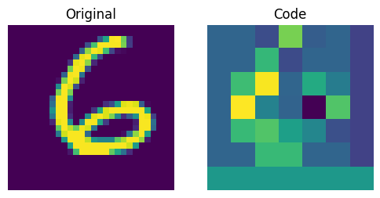
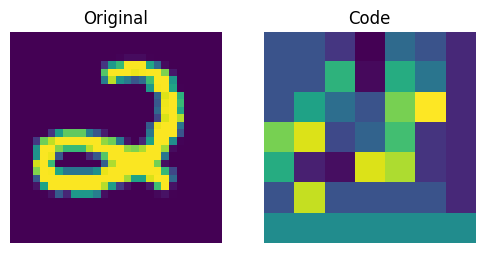
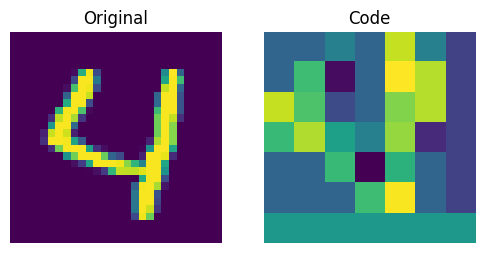
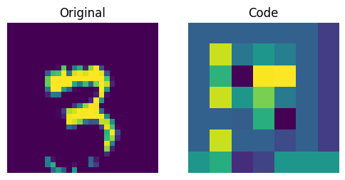
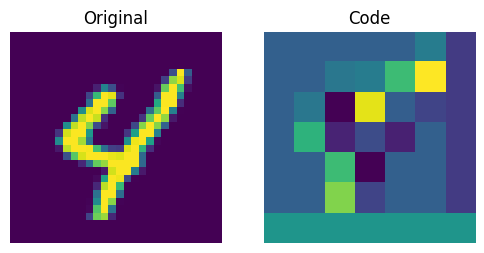
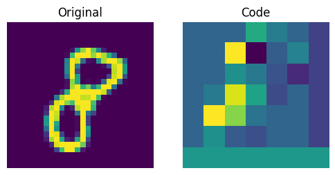
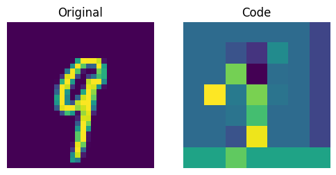
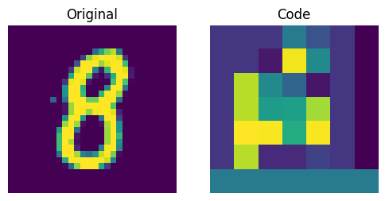
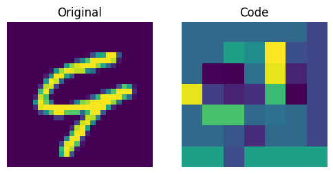
The figure above shows that the discrete codes have been able to capture some regularities from the dataset. Now, how do we sample from this codebook to create novel images? Since these codes are discrete and we imposed a categorical distribution on them, we cannot use them yet to generate anything meaningful until we can generate likely sequences of codes that we can give to the decoder.
The authors use a PixelCNN to train these codes so that they can be used as powerful priors to generate novel examples. PixelCNN was proposed in Conditional Image Generation with PixelCNN Decoders by van der Oord et al. We borrow the implementation from this PixelCNN example. It's an autoregressive generative model where the outputs are conditional on the prior ones. In other words, a PixelCNN generates an image on a pixel-by-pixel basis. For the purpose in this example, however, its task is to generate code book indices instead of pixels directly. The trained VQ-VAE decoder is used to map the indices generated by the PixelCNN back into the pixel space.
PixelCNN hyperparameters
num_residual_blocks = 2
num_pixelcnn_layers = 2
encoder = vqvae_trainer.vqvae.get_layer("encoder")
quantizer = vqvae_trainer.vqvae.get_layer("vector_quantizer")
encoded_outputs = encoder.predict(x_train_scaled)
pixelcnn_input_shape = encoded_outputs.shape[1:-1]
print(f"Input shape of the PixelCNN: {pixelcnn_input_shape}")
1875/1875 ━━━━━━━━━━━━━━━━━━━━ 2s 1ms/step
Input shape of the PixelCNN: (7, 7)
This input shape represents the reduction in the resolution performed by the encoder. With "same" padding, this exactly halves the "resolution" of the output shape for each stride-2 convolution layer. So, with these two layers, we end up with an encoder output tensor of 7x7 on axes 2 and 3, with the first axis as the batch size and the last axis being the code book embedding size. Since the quantization layer in the autoencoder maps these 7x7 tensors to indices of the code book, these output layer axis sizes must be matched by the PixelCNN as the input shape. The task of the PixelCNN for this architecture is to generate likely 7x7 arrangements of codebook indices.
Note that this shape is something to optimize for in larger-sized image domains, along with the code book sizes. Since the PixelCNN is autoregressive, it needs to pass over each codebook index sequentially in order to generate novel images from the codebook. Each stride-2 (or rather more correctly a stride (2, 2)) convolution layer will divide the image generation time by four. Note, however, that there is probably a lower bound on this part: when the number of codes for the image to reconstruct is too small, it has insufficient information for the decoder to represent the level of detail in the image, so the output quality will suffer. This can be amended at least to some extent by using a larger code book. Since the autoregressive part of the image generation procedure uses codebook indices, there is far less of a performance penalty on using a larger code book as the lookup time for a larger-sized code from a larger code book is much smaller in comparison to iterating over a larger sequence of code book indices, although the size of the code book does impact on the batch size that can pass through the image generation procedure. Finding the sweet spot for this trade-off can require some architecture tweaking and could very well differ per dataset.
PixelCNN model
Majority of this comes from this example.
Notes
Thanks to Rein van 't Veer for improving this example with copy-edits and minor code clean-ups.
class PixelConvLayer(layers.Layer):
def __init__(self, mask_type, **kwargs):
super().__init__()
self.mask_type = mask_type
self.conv = layers.Conv2D(**kwargs)
def build(self, input_shape):
self.conv.build(input_shape)
kernel_shape = self.conv.kernel.shape
mask = np.zeros(shape=kernel_shape)
mask[: kernel_shape[0] // 2, ...] = 1.0
mask[kernel_shape[0] // 2, : kernel_shape[1] // 2, ...] = 1.0
if self.mask_type == "B":
mask[kernel_shape[0] // 2, kernel_shape[1] // 2, ...] = 1.0
self.mask = self.add_weight(
name="mask",
shape=kernel_shape,
initializer=keras.initializers.Constant(mask),
trainable=False,
)
def call(self, inputs):
# Mask the kernel functionally
masked_kernel = self.conv.kernel * self.mask
return (
ops.conv(
inputs,
masked_kernel,
strides=self.conv.strides,
padding=self.conv.padding.upper(),
data_format="channels_last",
)
+ self.conv.bias
)
class ResidualBlock(layers.Layer):
def __init__(self, filters, **kwargs):
super().__init__(**kwargs)
self.conv1 = layers.Conv2D(filters, 1, activation="relu")
self.pixel_conv = PixelConvLayer(
mask_type="B",
filters=filters // 2,
kernel_size=3,
activation="relu",
padding="same",
)
self.conv2 = layers.Conv2D(filters, 1, activation="relu")
def call(self, inputs):
x = self.conv1(inputs)
x = self.pixel_conv(x)
x = self.conv2(x)
return layers.add([inputs, x])
# Build PixelCNN
pixelcnn_inputs = keras.Input(shape=(7, 7), dtype="int32")
ohe = ops.one_hot(pixelcnn_inputs, vqvae_trainer.num_embeddings)
x = PixelConvLayer(
mask_type="A", filters=128, kernel_size=7, activation="relu", padding="same"
)(ohe)
for _ in range(num_residual_blocks):
x = ResidualBlock(filters=128)(x)
for _ in range(num_pixelcnn_layers):
x = PixelConvLayer(
mask_type="B", filters=128, kernel_size=1, activation="relu", padding="valid"
)(x)
out = layers.Conv2D(
filters=vqvae_trainer.num_embeddings, kernel_size=1, padding="valid"
)(x)
pixel_cnn = keras.Model(pixelcnn_inputs, out, name="pixel_cnn")
pixel_cnn.summary()
Model: "pixel_cnn"
┏━━━━━━━━━━━━━━━━━━━━━━━━━━━━━━━━━┳━━━━━━━━━━━━━━━━━━━━━━━━┳━━━━━━━━━━━━━━━┓ ┃ Layer (type) ┃ Output Shape ┃ Param # ┃ ┡━━━━━━━━━━━━━━━━━━━━━━━━━━━━━━━━━╇━━━━━━━━━━━━━━━━━━━━━━━━╇━━━━━━━━━━━━━━━┩ │ input_layer_6 (InputLayer) │ (None, 7, 7) │ 0 │ ├─────────────────────────────────┼────────────────────────┼───────────────┤ │ one_hot (OneHot) │ (None, 7, 7, 128) │ 0 │ ├─────────────────────────────────┼────────────────────────┼───────────────┤ │ pixel_conv_layer │ (None, 7, 7, 128) │ 1,605,760 │ │ (PixelConvLayer) │ │ │ ├─────────────────────────────────┼────────────────────────┼───────────────┤ │ residual_block (ResidualBlock) │ (None, 7, 7, 128) │ 172,352 │ ├─────────────────────────────────┼────────────────────────┼───────────────┤ │ residual_block_1 │ (None, 7, 7, 128) │ 172,352 │ │ (ResidualBlock) │ │ │ ├─────────────────────────────────┼────────────────────────┼───────────────┤ │ pixel_conv_layer_3 │ (None, 7, 7, 128) │ 32,896 │ │ (PixelConvLayer) │ │ │ ├─────────────────────────────────┼────────────────────────┼───────────────┤ │ pixel_conv_layer_4 │ (None, 7, 7, 128) │ 32,896 │ │ (PixelConvLayer) │ │ │ ├─────────────────────────────────┼────────────────────────┼───────────────┤ │ conv2d_15 (Conv2D) │ (None, 7, 7, 128) │ 16,512 │ └─────────────────────────────────┴────────────────────────┴───────────────┘
Total params: 2,032,768 (7.75 MB)
Trainable params: 1,049,728 (4.00 MB)
Non-trainable params: 983,040 (3.75 MB)
Prepare data to train the PixelCNN
We will train the PixelCNN to learn a categorical distribution of the discrete codes. First, we will generate code indices using the encoder and vector quantizer we just trained. Our training objective will be to minimize the crossentropy loss between these indices and the PixelCNN outputs. Here, the number of categories is equal to the number of embeddings present in our codebook (128 in our case). The PixelCNN model is trained to learn a distribution (as opposed to minimizing the L1/L2 loss), which is where it gets its generative capabilities from.
flat_enc_outputs = encoded_outputs.reshape(-1, encoded_outputs.shape[-1])
codebook_indices = ops.convert_to_numpy(quantizer.get_code_indices(flat_enc_outputs))
codebook_indices = codebook_indices.reshape(encoded_outputs.shape[:-1])
PixelCNN training
pixel_cnn.compile(
optimizer=keras.optimizers.Adam(3e-4),
loss=keras.losses.SparseCategoricalCrossentropy(from_logits=True),
metrics=["accuracy"],
)
pixel_cnn.fit(
x=codebook_indices,
y=codebook_indices,
batch_size=128,
epochs=30,
validation_split=0.1,
)
Epoch 1/30
422/422 ━━━━━━━━━━━━━━━━━━━━ 37s 84ms/step - accuracy: 0.6005 - loss: 1.6875 - val_accuracy: 0.6412 - val_loss: 1.2572
Epoch 2/30
422/422 ━━━━━━━━━━━━━━━━━━━━ 36s 85ms/step - accuracy: 0.6501 - loss: 1.2010 - val_accuracy: 0.6553 - val_loss: 1.1657
Epoch 3/30
422/422 ━━━━━━━━━━━━━━━━━━━━ 36s 85ms/step - accuracy: 0.6609 - loss: 1.1368 - val_accuracy: 0.6622 - val_loss: 1.1238
Epoch 4/30
422/422 ━━━━━━━━━━━━━━━━━━━━ 37s 89ms/step - accuracy: 0.6672 - loss: 1.1029 - val_accuracy: 0.6661 - val_loss: 1.1014
Epoch 5/30
422/422 ━━━━━━━━━━━━━━━━━━━━ 36s 85ms/step - accuracy: 0.6713 - loss: 1.0814 - val_accuracy: 0.6693 - val_loss: 1.0875
Epoch 6/30
422/422 ━━━━━━━━━━━━━━━━━━━━ 36s 85ms/step - accuracy: 0.6743 - loss: 1.0661 - val_accuracy: 0.6712 - val_loss: 1.0786
Epoch 7/30
422/422 ━━━━━━━━━━━━━━━━━━━━ 36s 85ms/step - accuracy: 0.6766 - loss: 1.0543 - val_accuracy: 0.6723 - val_loss: 1.0722
Epoch 8/30
422/422 ━━━━━━━━━━━━━━━━━━━━ 36s 85ms/step - accuracy: 0.6785 - loss: 1.0446 - val_accuracy: 0.6735 - val_loss: 1.0652
Epoch 9/30
422/422 ━━━━━━━━━━━━━━━━━━━━ 36s 85ms/step - accuracy: 0.6801 - loss: 1.0366 - val_accuracy: 0.6743 - val_loss: 1.0603
Epoch 10/30
422/422 ━━━━━━━━━━━━━━━━━━━━ 36s 85ms/step - accuracy: 0.6814 - loss: 1.0298 - val_accuracy: 0.6751 - val_loss: 1.0562
Epoch 11/30
422/422 ━━━━━━━━━━━━━━━━━━━━ 37s 88ms/step - accuracy: 0.6826 - loss: 1.0238 - val_accuracy: 0.6755 - val_loss: 1.0528
Epoch 12/30
422/422 ━━━━━━━━━━━━━━━━━━━━ 37s 87ms/step - accuracy: 0.6837 - loss: 1.0186 - val_accuracy: 0.6759 - val_loss: 1.0503
Epoch 13/30
422/422 ━━━━━━━━━━━━━━━━━━━━ 37s 87ms/step - accuracy: 0.6847 - loss: 1.0140 - val_accuracy: 0.6763 - val_loss: 1.0485
Epoch 14/30
422/422 ━━━━━━━━━━━━━━━━━━━━ 37s 87ms/step - accuracy: 0.6855 - loss: 1.0097 - val_accuracy: 0.6766 - val_loss: 1.0470
Epoch 15/30
422/422 ━━━━━━━━━━━━━━━━━━━━ 37s 87ms/step - accuracy: 0.6863 - loss: 1.0059 - val_accuracy: 0.6768 - val_loss: 1.0459
Epoch 16/30
422/422 ━━━━━━━━━━━━━━━━━━━━ 36s 85ms/step - accuracy: 0.6870 - loss: 1.0026 - val_accuracy: 0.6768 - val_loss: 1.0447
Epoch 17/30
422/422 ━━━━━━━━━━━━━━━━━━━━ 36s 85ms/step - accuracy: 0.6877 - loss: 0.9992 - val_accuracy: 0.6770 - val_loss: 1.0439
Epoch 18/30
422/422 ━━━━━━━━━━━━━━━━━━━━ 36s 86ms/step - accuracy: 0.6883 - loss: 0.9959 - val_accuracy: 0.6772 - val_loss: 1.0438
Epoch 19/30
422/422 ━━━━━━━━━━━━━━━━━━━━ 36s 86ms/step - accuracy: 0.6890 - loss: 0.9928 - val_accuracy: 0.6773 - val_loss: 1.0432
Epoch 20/30
422/422 ━━━━━━━━━━━━━━━━━━━━ 36s 85ms/step - accuracy: 0.6896 - loss: 0.9900 - val_accuracy: 0.6772 - val_loss: 1.0429
Epoch 21/30
422/422 ━━━━━━━━━━━━━━━━━━━━ 37s 87ms/step - accuracy: 0.6903 - loss: 0.9874 - val_accuracy: 0.6772 - val_loss: 1.0427
Epoch 22/30
422/422 ━━━━━━━━━━━━━━━━━━━━ 37s 87ms/step - accuracy: 0.6909 - loss: 0.9849 - val_accuracy: 0.6773 - val_loss: 1.0427
Epoch 23/30
422/422 ━━━━━━━━━━━━━━━━━━━━ 37s 86ms/step - accuracy: 0.6914 - loss: 0.9826 - val_accuracy: 0.6772 - val_loss: 1.0427
Epoch 24/30
422/422 ━━━━━━━━━━━━━━━━━━━━ 37s 87ms/step - accuracy: 0.6920 - loss: 0.9804 - val_accuracy: 0.6773 - val_loss: 1.0429
Epoch 25/30
422/422 ━━━━━━━━━━━━━━━━━━━━ 37s 87ms/step - accuracy: 0.6925 - loss: 0.9783 - val_accuracy: 0.6772 - val_loss: 1.0431
Epoch 26/30
422/422 ━━━━━━━━━━━━━━━━━━━━ 36s 86ms/step - accuracy: 0.6929 - loss: 0.9763 - val_accuracy: 0.6771 - val_loss: 1.0432
Epoch 27/30
422/422 ━━━━━━━━━━━━━━━━━━━━ 36s 86ms/step - accuracy: 0.6934 - loss: 0.9744 - val_accuracy: 0.6771 - val_loss: 1.0434
Epoch 28/30
422/422 ━━━━━━━━━━━━━━━━━━━━ 36s 86ms/step - accuracy: 0.6938 - loss: 0.9726 - val_accuracy: 0.6770 - val_loss: 1.0435
Epoch 29/30
422/422 ━━━━━━━━━━━━━━━━━━━━ 36s 85ms/step - accuracy: 0.6942 - loss: 0.9708 - val_accuracy: 0.6771 - val_loss: 1.0439
Epoch 30/30
422/422 ━━━━━━━━━━━━━━━━━━━━ 36s 86ms/step - accuracy: 0.6947 - loss: 0.9691 - val_accuracy: 0.6771 - val_loss: 1.0447
<keras.src.callbacks.history.History at 0x169c6be30>
We can improve these scores with more training and hyperparameter tuning.
Codebook sampling
Now that our PixelCNN is trained, we can sample distinct codes from its outputs and pass them to our decoder to generate novel images.
# Create a mini sampler model.
def sample_from_logits(logits):
logits_flat = ops.reshape(logits, (-1, vqvae_trainer.num_embeddings))
sampled = random.categorical(logits_flat, 1)
return ops.reshape(sampled, ops.shape(logits)[:-1])
We now construct a prior to generate images. Here, we will generate 10 images.
# Create an empty array of priors.
batch = 10
priors = np.zeros((batch, 7, 7), dtype="int32")
for row in range(7):
for col in range(7):
logits = pixel_cnn.predict(priors, verbose=0)
# sampled_indices is a Keras tensor
sampled_indices = sample_from_logits(logits)
# Convert to numpy to avoid JAX tracer/index errors
sampled_indices_np = ops.convert_to_numpy(sampled_indices)
priors[:, row, col] = sampled_indices_np[:, row, col]
print(f"Prior shape: {priors.shape}")
Prior shape: (10, 7, 7)
We can now use our decoder to generate the images.
# Perform an embedding lookup.
pretrained_embeddings = quantizer.embeddings
priors_ohe = ops.one_hot(priors, vqvae_trainer.num_embeddings)
quantized = ops.matmul(priors_ohe, ops.transpose(pretrained_embeddings))
quantized = ops.reshape(quantized, (-1, 7, 7, vqvae_trainer.latent_dim))
decoder = vqvae_trainer.vqvae.get_layer("decoder")
generated_samples = decoder.predict(quantized)
for i in range(batch):
plt.subplot(1, 2, 1)
plt.imshow(priors[i])
plt.title("Code")
plt.axis("off")
plt.subplot(1, 2, 2)
plt.imshow(generated_samples[i].squeeze() + 0.5)
plt.title("Generated Sample")
plt.axis("off")
show_figure()
1/1 ━━━━━━━━━━━━━━━━━━━━ 0s 34ms/step
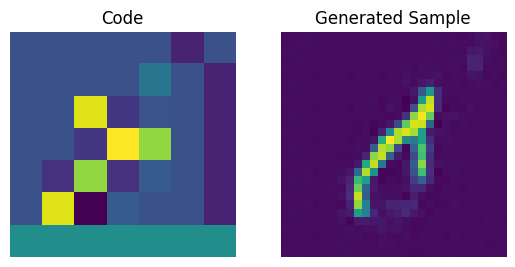
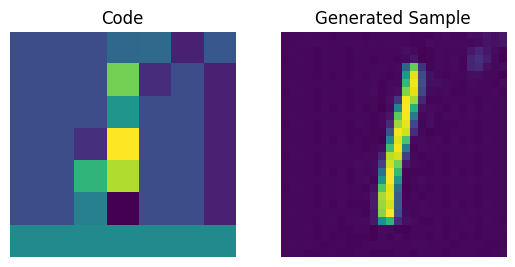
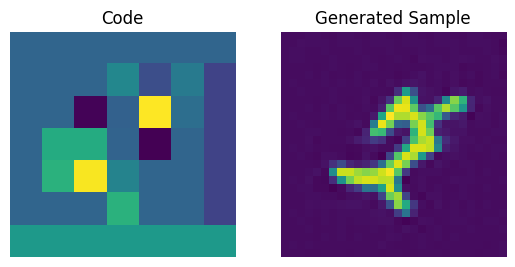
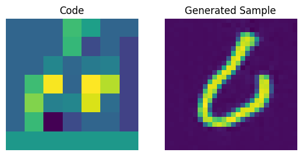
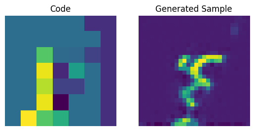
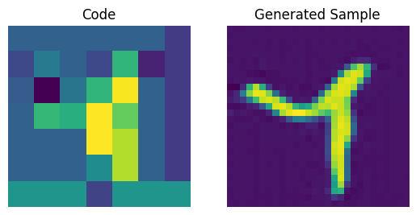
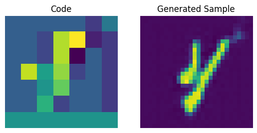
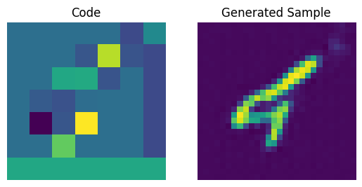
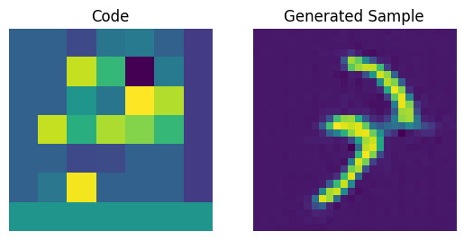
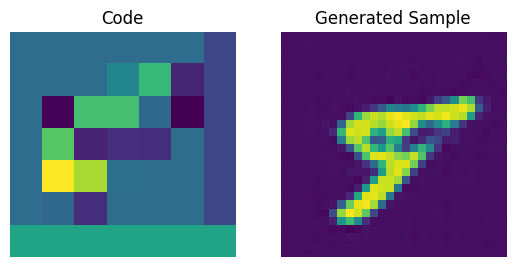
We can enhance the quality of these generated samples by tweaking the PixelCNN.
Additional notes
- After the VQ-VAE paper was initially released, the authors developed an exponential moving averaging scheme to update the embeddings inside the quantizer. If you're interested you can check out this snippet.
- To further enhance the quality of the generated samples, VQ-VAE-2 was proposed that follows a cascaded approach to learn the codebook and to generate the images.